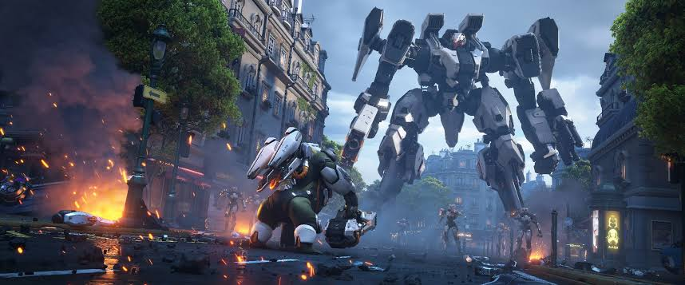
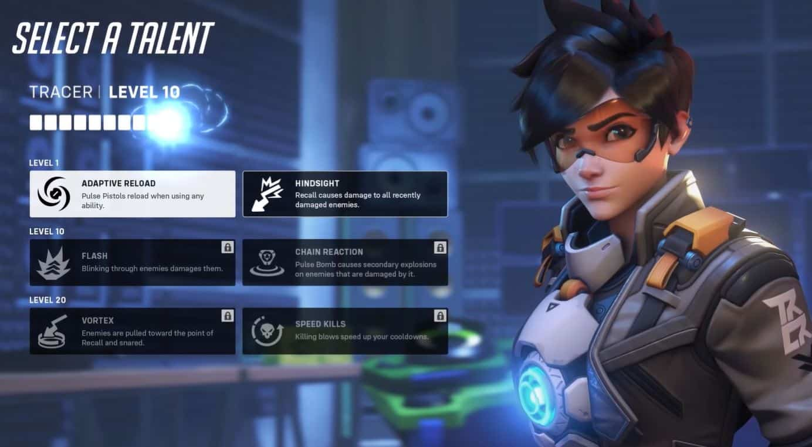
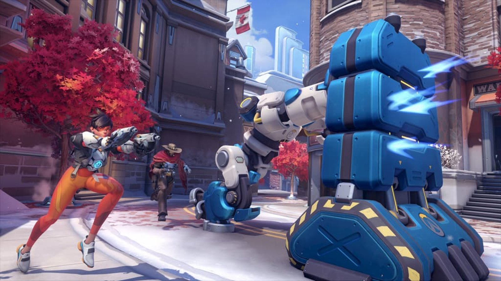

Overwatch2

Story
Overwatch 2 หลักๆ คือการเล่าเรื่องราวหลังจากช่วง Recall หรือช่วงหลังจากมารวมตัวกันใหม่
หลังจากที่ Overwatch โดนสั่งปิดไปในตอนแรก และนั้นเป็นหัวใจหลักของภาคนี้ ซึ่งก็คือระบบ PvE
ที่จะบอกเล่าเรื่องราวให้ผู้เล่นได้รับรู้ถึงเรื่องราวทั้งหมด โดยยังมีเนื้อหาใหม่ๆ อีกมาก
ไม่ว่าจะเป็นการรีดีไซน์ตัวละครใหม่ ฮีโรใหม่ mapใหม่ โหมดการเล่นแบบใหม่ สกินใหม่และอื่นๆอีกมากมาย

Gameplay
ฮีโร่แต่ละตัวจะมีความสามารถพิเศษเพิ่มเติมจากภาคแรกเยอะมาก แต่จะสามารถใช้งานได้ในโหมด PvE
เท่านั้น ตัวเกมจะเน้นไปทาง PvE ซะส่วนมาก โดยยังมีความเชื่อมต่อกันของทั้งสองภาคอยู่ ทั้งเนื้อเรื่อง แมป
และตัวละครใหม่ จะยังใช้ร่วมกัน เช่นหาก Overwatch 2 มีแมปหรือ ตัวละครใหม่ Overwatch ภาคแรกก็จะยังได้อัปเดตตามไปด้วย
โดย Overwatch 2 จะเน้นเจาะลึกไปที่ตัวละครแต่ละตัว และเนื้อเรื่องทั้งหมด จะมี Hero Mission และ Story Mission
ให้ทำเยอะมากที่เน้นการเล่น Co-op โดย Hero Mission จะบอกเล่าเรื่องราวของฮีโร่แต่ละตัว
และเป็นการเล่นเพื่อเก็บเลเวลของตัวละครเพื่อนำมา upgrade เพื่อปลดล็อกพลังใหม่ๆ ให้แข็งเกร่งขึ้นกว่าเดิม ส่วน Story
Mission จะเป็นการบอกเล่าเรื่องราวของกลุ่ม Overwatch และกลุ่ม Talon
เพื่อให้ผู้เล่นเข้าใจถึงเนื้อเรื่องที่ดำเนินมาทั้งหมด จะคล้ายๆ อีเวนต์พิเศษในแต่ละเทศกาลของ Overwatch ภาคแรก
ที่จะให้ผู้เล่นทำ objective ให้สำเร็จลุล่วงบนโหมด PvE โดยเราจะสามารถเลือกฮีโร่ได้แตกต่างกันไปตามเนื้อเรื่องนั้นๆ
และจะมี objective ที่สับเปลี่ยนไปเรื่อยๆ เพื่อที่จะทำให้เมื่อผู้เล่นกลับมาเล่นอีกครั้งจะได้ไม่รู้สึกเบื่อ
โดยสิ่งที่พิเศษกว่านั้นคือไอเท็มใน Story Mission จะมีไอเท็มพิเศษให้เก็บตามแมป เพื่อนำมาใช้งานได้ด้วย
และจะมีระดับความหายากตามความสามารถของไอเท็มนั้นๆ อีกด้วย
และอีกหนึ่งอย่างที่น่าสนใจมากคือ ในทุก ๆ เนื้อเรื่องจะมีฉาก cutscene
ทั้งเปิดเรื่องละจบเรื่องทุกตอนเลยแกนหลักของเกมจะมีการเล่นที่รวดเร็ว เพื่อรองรับการแข่งขัน Overwatch League

NEW MODE: PUSH เป็นหนึ่งในโหมดหลักของเกม โดยจะเป็นรูปแบบการเล่น 6 vs 6 คล้ายกับในภาคแรก แต่
Objective ของโหมด Push คือการเข้ายึดตัวหุ่นยนต์เพื่อให้หุ่นยนต์นั้นดันเสาหลักไปยังอีกฝ่าย
โดยเมื่อฝ่ายใดดันไปจนถึงอีกฝั่งเส้นชัยได้ก่อน จะเป็นผู้ชนะไป โดยจะมีทั้งรูปแบบ Quick Play และ Competitive
เช่นเดียวกับภาคแรก

HUD ใหม่ มีการปรับเปลี่ยน HUD ใหม่หมด เพื่อประสิทธิภาพในการเล่นที่ดียิ่งขึ้ัน
โดยทางผู้พัฒนายังบอกว่า อาจจะมีอะไรเพิ่มเติมมากกว่านี้เพื่อให้ดูสดใหม่มากขึ้น